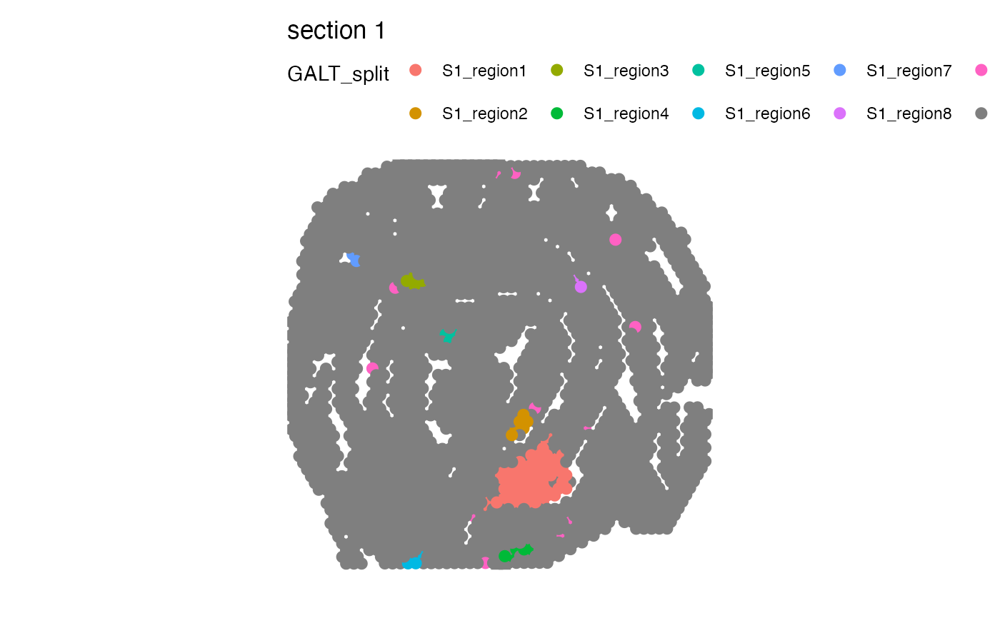
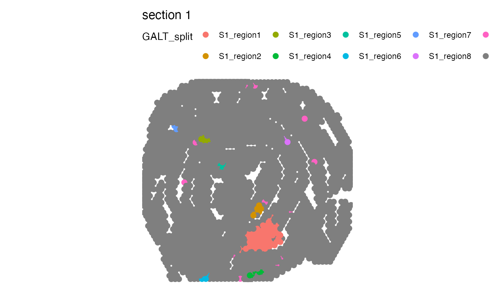

Disconnect regions
disconnect-regions.RdThis function allows you split spatially disconnected regions belonging to the same category. In cases where a certain tissue type create isolated "islands" in the tissue section, these islands can be separated. A common example is tertiary lymphoid structures (TLS) which are typically dispersed across a tissue section.
Usage
DisconnectRegions(object, ...)
# S3 method for default
DisconnectRegions(object, spots, verbose = TRUE, ...)
# S3 method for Seurat
DisconnectRegions(
object,
column_name,
select_groups = NULL,
verbose = TRUE,
...
)Arguments
- object
An object
- ...
Arguments passed to other methods
- spots
A character vector with spot IDs present 'object'
- verbose
Print messages
- column_name
A character specifying the name of a column in your meta data that contains categorical data, e.g. clusters or manual selections
- select_groups
A character vector to select specific groups in
column_namewith. All groups are selected by default, but the common use case is to select a region of interest.
default method
Takes a set of spot IDs and returns a named character vector with new labels. The names of this vector corresponds to the input spot IDs.
Seurat
A categorical variable is selected from the Seurat object meta data
slot using column_name. From this column, one can specify what groups
to disconnect with select_groups. If select_groups isn't specified,
all groups in select_groups will be disconnected separately.
The function returns a Seurat object with additional columns in the meta data
slot, one for each group in select_groups. The suffix to these columns is
"_split", so a group in select_groups called "tissue" will get a column
called "tissue_split" with new labels for each spatially disconnected region.
See also
Other spatial-methods:
CorSpatialFeatures(),
CutSpatialNetwork(),
GetSpatialNetwork(),
RadialDistance(),
RegionNeighbors(),
RunLabelAssortativityTest(),
RunLocalG(),
RunNeighborhoodEnrichmentTest()
Examples
library(STUtility2)
library(dplyr)
library(ggplot2)
library(patchwork)
galt_spots_file <- system.file("extdata/mousecolon",
"galt_spots.csv",
package = "STUtility2")
galt_spots <- read.csv(galt_spots_file) |>
as_tibble()
# read coordinates
coordfile <- system.file("extdata/mousecolon/spatial",
"tissue_positions_list.csv",
package = "STUtility2")
coords <- read.csv(coordfile, header = FALSE) |>
filter(V2 == 1) |>
select(V1, V6, V5) |>
setNames(nm = c("barcode", "x", "y")) |>
bind_cols(sampleID = 1) |>
as_tibble()
# Select spots
spots <- galt_spots$barcode[galt_spots$selection == "GALT"]
head(spots)
#> [1] "AAACTGCTGGCTCCAA-1" "AACCTTTAAATACGGT-1" "AACGATAATGCCGTAG-1"
#> [4] "AACGTCAGACTAGTGG-1" "AACTAGGCTTGGGTGT-1" "AAGCATACTCTCCTGA-1"
# Find disconnected regions in GALT spots
disconnected_spot_labels <- DisconnectRegions(coords, spots)
#> ℹ Detecting disconnected regions for 106 spots
#> ℹ Found 8 disconnected graph(s) in data
#> ℹ Sorting disconnected regions by decreasing size
#> ℹ Found 12 singletons in data
#> → These will be labeled as 'singletons'
# Add information to coords and plot
gg <- coords |>
mutate(galt = NA, galt_disconnected = NA)
gg$galt[match(spots, gg$barcode)] <- "galt"
gg$galt_disconnected[match(names(disconnected_spot_labels), gg$barcode)] <- disconnected_spot_labels
p1 <- ggplot(gg, aes(x, y, color = galt))
p2 <- ggplot(gg, aes(x, y, color = galt_disconnected))
p <- p1 + p2 &
geom_point() &
theme_void() &
coord_fixed()
p
 library(STUtility2)
library(ggplot2)
library(patchwork)
se_mcolon <- readRDS(system.file("extdata/mousecolon", "se_mcolon", package = "STUtility2"))
# Plot selected variable
MapLabels(se_mcolon, column_name = "selection",
pt_size = 3, override_plot_dims = TRUE)
library(STUtility2)
library(ggplot2)
library(patchwork)
se_mcolon <- readRDS(system.file("extdata/mousecolon", "se_mcolon", package = "STUtility2"))
# Plot selected variable
MapLabels(se_mcolon, column_name = "selection",
pt_size = 3, override_plot_dims = TRUE)
 # Disconnect regions
se_mcolon <- DisconnectRegions(se_mcolon, column_name = "selection", select_groups = "GALT")
#> ℹ Extracting disconnected components for group 'GALT'
#> ℹ Detecting disconnected regions for 106 spots
#> ℹ Found 8 disconnected graph(s) in data
#> ℹ Sorting disconnected regions by decreasing size
#> ℹ Found 12 singletons in data
#> → These will be labeled as 'singletons'
# Plot split regions
MapLabels(se_mcolon, column_name = "GALT_split",
pt_size = 3, override_plot_dims = TRUE)

# Note that if multiple sections are present, each section will be given
# it's own prefix in the disconnected groups.
se_merged <- MergeSTData(se_mcolon, se_mcolon)
# Plot selected variable
MapLabels(se_merged, column_name = "selection",
pt_size = 3, override_plot_dims = TRUE) +
plot_layout(guides = "collect") &
theme(legend.position = "top")
# Disconnect regions
se_mcolon <- DisconnectRegions(se_mcolon, column_name = "selection", select_groups = "GALT")
#> ℹ Extracting disconnected components for group 'GALT'
#> ℹ Detecting disconnected regions for 106 spots
#> ℹ Found 8 disconnected graph(s) in data
#> ℹ Sorting disconnected regions by decreasing size
#> ℹ Found 12 singletons in data
#> → These will be labeled as 'singletons'
# Plot split regions
MapLabels(se_mcolon, column_name = "GALT_split",
pt_size = 3, override_plot_dims = TRUE)

# Note that if multiple sections are present, each section will be given
# it's own prefix in the disconnected groups.
se_merged <- MergeSTData(se_mcolon, se_mcolon)
# Plot selected variable
MapLabels(se_merged, column_name = "selection",
pt_size = 3, override_plot_dims = TRUE) +
plot_layout(guides = "collect") &
theme(legend.position = "top")
 # Disconnect regions
se_merged <- DisconnectRegions(se_merged, column_name = "selection", select_groups = "GALT")
#> ℹ Extracting disconnected components for group 'GALT'
#> ℹ Detecting disconnected regions for 212 spots
#> ℹ Found 16 disconnected graph(s) in data
#> ℹ Sorting disconnected regions by decreasing size
#> ℹ Found 24 singletons in data
#> → These will be labeled as 'singletons'
# Plot split regions
MapLabels(se_merged, column_name = "GALT_split",
pt_size = 3, override_plot_dims = TRUE) +
plot_layout(guides = "collect") &
theme(legend.position = "top")
# Disconnect regions
se_merged <- DisconnectRegions(se_merged, column_name = "selection", select_groups = "GALT")
#> ℹ Extracting disconnected components for group 'GALT'
#> ℹ Detecting disconnected regions for 212 spots
#> ℹ Found 16 disconnected graph(s) in data
#> ℹ Sorting disconnected regions by decreasing size
#> ℹ Found 24 singletons in data
#> → These will be labeled as 'singletons'
# Plot split regions
MapLabels(se_merged, column_name = "GALT_split",
pt_size = 3, override_plot_dims = TRUE) +
plot_layout(guides = "collect") &
theme(legend.position = "top")